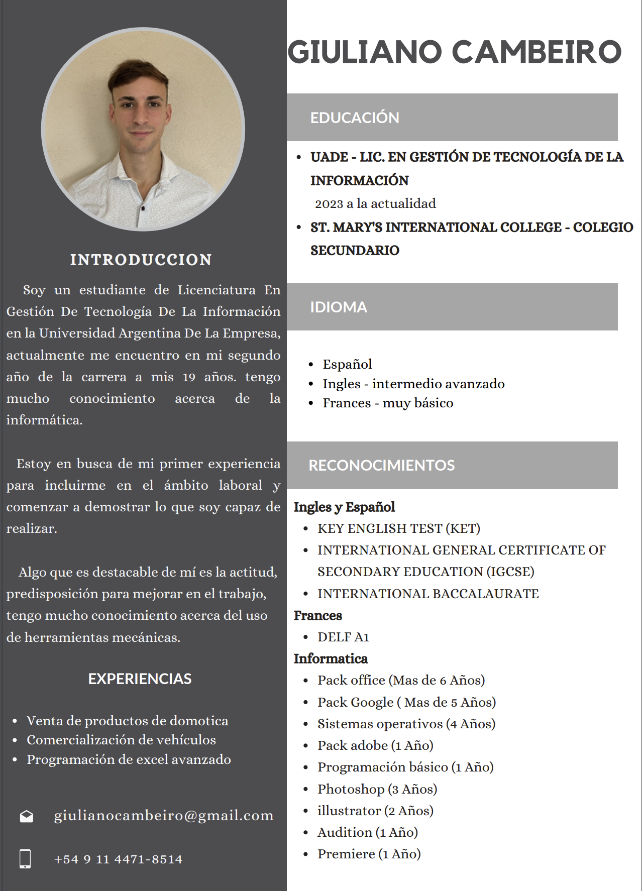

Soy un joven emprendedor de 19 años, actualmente estudiante en la UADE, con un enfoque en la comercialización de productos de tecnología y domótica. Me apasionan las innovaciones tecnológicas, y me dedico a ofrecer soluciones que mejoran la eficiencia y el confort tanto en hogares como en espacios empresariales. Mi conocimiento en el área me permite asesorar a mis clientes de manera efectiva, garantizando siempre una experiencia personalizada y adaptada a las necesidades de cada usuario. Mantenerme actualizado con las últimas tendencias del mercado es una prioridad para mí, y combino mi formación académica con una práctica profesional activa, demostrando un fuerte compromiso con la calidad y la satisfacción del cliente.
- Fui al colegio de Orange day school jardin, primaria y unos años de secundaria
- En 2019 comence en el colegio de St'marys hasta el 2022 que finalice
- En el 2023 comence la facultad en Uade hasta la actualidad
